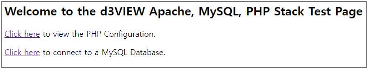
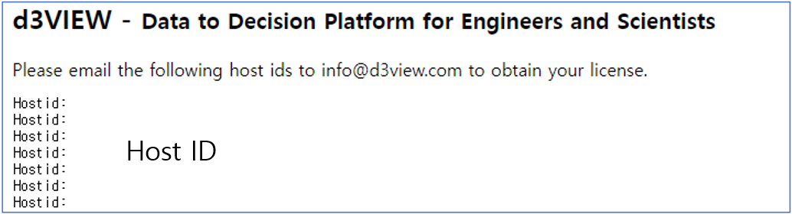
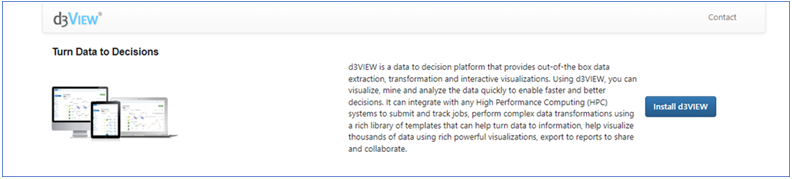

D3VIEW 시작하기
1. Installation
1.1 d3view 설치 장비 정보 제공
d3view 설치를 위해 다음의 서버 정보를 d3view 본사에 제공하고 설치 파일을 제공 받습니다.
Type and version of Operating System(Only linux)
Scheduler Type and Version
Server type (On-Premis or Cloud)
1.2 d3view 서버 설치
제공 받은 설치 파일을 이용하여 설치를 진행합니다.
d3view 이름의 사용자를 생성합니다.
d3view 이름의 그룹을 생성합니다.
d3view를 설치할 /opt/d3view 디렉토리를 생성합니다.
생성한 경로로 이동하여 설치 파일을 실행합니다.
추가로 d3ivew에서 구분되는 사용자들의 파일 저장 디렉토리를 만들어 줍니다. (ex. /storage/d3view)
Attention
d3view 설치는 root 계정으로 설치합니다.
2개 이상의 계산노드가 존재하는 서버에서 d3view를 활용할 경우 d3view 사용자는 모든 노드에 비번 없이 접속이 가능해야 합니다.
2개 이상의 계산노드가 존재하는 서버의 경우 각 노드에 마스터 노드의 /home/d3view와 /storage/d3view 경로가 공유 되어야 합니다.
1.3 서버 실행
d3view를 설치한 이후에 서버를 실행하여 d3view를 구동합니다.
{D3VIEW_PATH}/amp/hpptd/conf/httpd.conf 파일의 내용을 수정합니다.
User와 Group을 d3view로 설정합니다.
다음의 설정 변수로 이동하여 d3view가 설치된 경로에 맞게 수정합니다.
ServerRoot : “{D3VIEW_PATH}/amp/httpd”
Listen : “3080”
PHPInDir : “{D3VIEW_PATH}/amp/php/bin”
DocumentRoot & Directory : “{D3VIEW_PATH}/web”
ErrorLog : “{D3VIEW_PATH}/var/logs/error_log”
ScriptAlias /cgi-bin/ “{D3VIEW_PATH}/amp/httpd/cgi-bin/”
Directory (for cgi-bin) : “{D3VIEW_PATH}/amp/httpd/cgi-bin”
Include (for Deflate configuration) : “Include {D3VIEW_PATH}/amp/httpd/conf/extra/httpd-deflate.conf”
{D3VIEW_PATH}/amp/httpd/conf/php-fpm.conf 파일의 내용을 수정합니다.
user와 group을 d3view로 설정합니다.
d3view를 설치한 경로로 이동합니다.
d3view_server.sh 파일내 실행되는 명령어들의 경로가 올바른지 확인합니다.
./d3view_server.sh start 명령어를 입력하여 d3view를 구동합니다.
client 컴퓨터 웹 브라우저에서 http://(server_ip_address):3080을 입력하고 아래와 같이 표시되는지 확인합니다.

Attention
d3view 구성 명령어는 d3view 사용자로 구동합니다.
1.4 라이선스 발급을 위한 host id 확인
d3view의 라이선스를 발급받기 위해 d3view 서버를 설치한 장비의 host id를 확인하고 본사에 전달해야 합니다.경우에 따라 이후 과정으로 d3view application 설치 파일이 본사로 부터 제공될 수 있습니다. d3view application의 위치는 {D3VIEW_PATH}/app 경로이며 설치가 필요한 경우 제공되는 설치 파일을 {D3VIEW_PATH}/app에 위치 시키고 압축을 해제합니다.
따로 본사로 부터 application을 제공 받은 경우 {D3VIEW_PATH}/amp/hpptd/conf/httpd.conf의
DocuentRoot와 바로 아래에 있는Directory의 경로를 설치한 application의 web 경로로 변경합니다.{D3VIEW_PATH}/amp/php/bin/php.ini 파일에 정의 된 경로가 올바른지 확인하고 zend 설정이 다음과 같은지 확인합니다.
zend_extension=”{D3VIEW_PATH}/amp/php/lib/php/extensions/no-debug-non-zts-20090626/ZendGuardLoader.so”
zend_loader.enable=1
zend_loader.disable_licensing=0
zend_loader.obfuscation_level_support=3
zend_loader.license_path=path/to/license/3VIEW_License_XfinityInc_202122zl.zl
위 과정에서 수정이 된 경우 서버를 d3view를 재구동합니다. (ex. {D3VIEW_PATH}/d3view_server.sh restart)
Client 컴퓨터의 웹 브라우져에서 http://{server_ip_address}:3080/hostids.php를 입력하고 표시되는 host id를 확인하고 d3view 공급처에 hostid 정보를 제공합니다.

1.5 라이선스 설치
공급처로부터 발급받은 라이선스를 d3view 서버에 적용합니다.
{D3VIEW_PATH}/license 디렉토리에 위치 시키고 {D3VIEW_PATH}/amp/php/bin/php.ini 파일에서 zend_loader.license_path의 경로를 실제 라이선스 파일 위치로 설정합니다.
d3view 서버를 재구동합니다.
Client 컴퓨터의 웹 브라우져에서 http://{server_ip_address}:3080을 입력하고 아래와 같은 페이지가 표시되는지 확인합니다.

1.5 라이선스 설치
공급처로부터 발급받은 라이선스를 d3view 서버에 적용합니다.
{D3VIEW_PATH}/license 디렉토리에 위치 시키고 {D3VIEW_PATH}/amp/php/bin/php.ini 파일에서 zend_loader.license_path의 경로를 실제 라이선스 파일 위치로 설정합니다.
d3view 서버를 재구동합니다.
Client 컴퓨터의 웹 브라우져에서 http://{server_ip_address}:3080을 입력하고 아래와 같은 페이지가 표시되는지 확인합니다.
1.6 d3view 설치
라이선스 설치 과정에서 정상적으로 웹 페이지가 표시되었다면 Install d3VIEW 버튼 클릭 이후에 나타나는 입력란에 다음의 정보를 입력합니다.
User : root
Password : root
Database Name : d3view
Port : {database port number} (ex. 33060)
2 d3VIEW 설정
2.1 서버 설정
여기서 말하는 서버는 실제로 d3view 웹 페이지에서 job을 제출하고 해석이 진행되는 서버를 의미합니다. 서버는 d3view 관리자 계정으로 설정할 수 있으며 서버 설정과 관련한 설명은 d3view 아래 링크에서 확인할 수 있습니다.
https://www.d3view.com/docs/master/getting_started/Administration.html#add-an-hpc-server
Attention
관리자 계정의 아이디는 반드시 admin으로 생성하여야 합니다.
2.2 사용자 관리
d3VIEW 사용자는 관리자 계정으로 추가 및 수정등을 할 수 있습니다. 기본적인 사용자 관리 내용은 아래 링크에서 확인 할 수 있습니다.
https://www.d3view.com/docs/master/getting_started/Administration.html#users